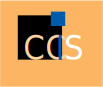
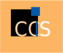
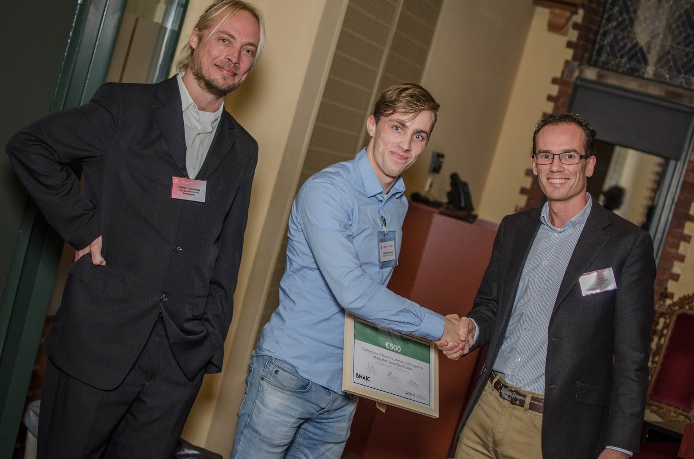
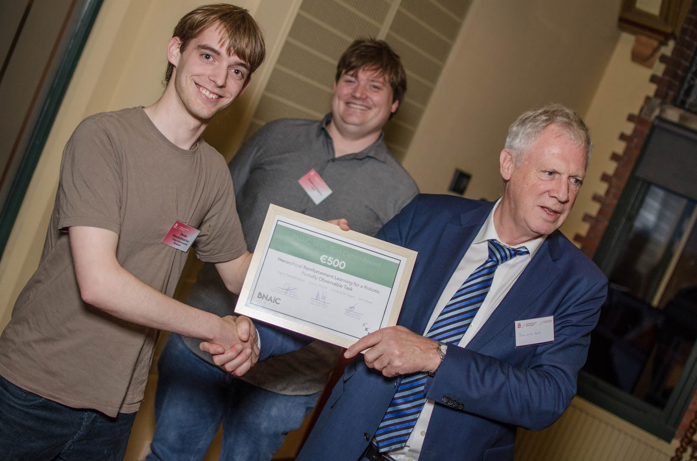
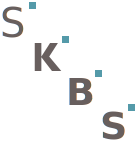
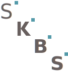

BNAIC 2017
The 29th Benelux Conference on Artificial Intelligence
November 8–9, 2017 in Groningen, The Netherlands
The conference is held in Het Kasteel.
The 29th Benelux Conference on Artificial Intelligence
November 8–9, 2017 in Groningen, The Netherlands
The conference is held in Het Kasteel.
BNAIC 2017 is held in Het Kasteel, Melkweg 1, Groningen, The Netherlands, on Wednesday November 8 and Thursday November 9, 2017. BNAIC 2017 will include invited speakers, research presentations, posters and demonstrations. Authors are invited to submit papers on all aspects of Artificial Intelligence.
As in 2016, the postproceedings will be published in the Springer CCIS series (Communications in Computer and Information Science). The BNAIC postproceedings will be accessible at link.springer.com/conference/bnaic (expected by March 2018).
 

The preproceedings for BNAIC 2017 are available.
Two awards were presented during the conference. The BNAIC 2017 SNN Best Paper Award was won by Mathijs Pieters and Marco Wiering for their paper Comparison of Machine Learning Techniques for Multi-label Genre Classification. The BNAIC 2017 SKBS Best Demo Award was won by Denis Steckelmacher, Hélène Plisnier, Diederik M. Roijers and Ann Nowé for their demonstration entitled Hierarchical Reinforcement Learning for a Robotic Partially Observable Task.
 
Photos (by Randy Wind)


 
